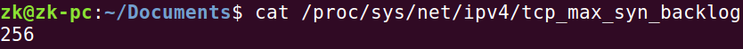
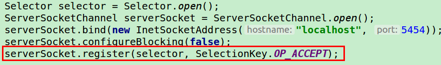
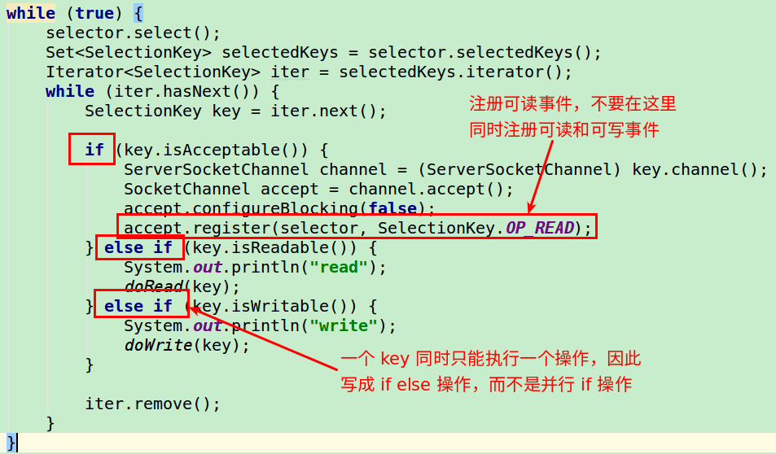
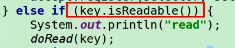
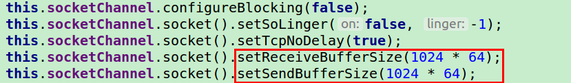
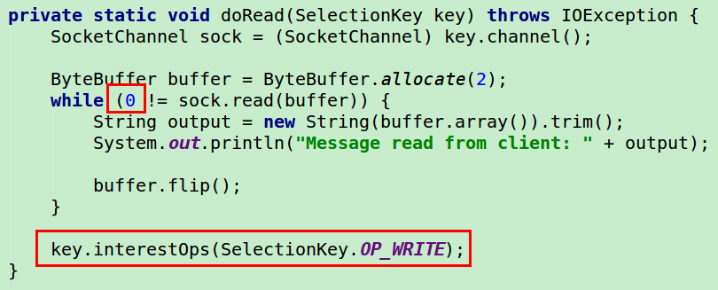
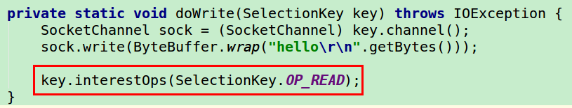

Linux Programming
1 File I/O
每个进程都有一个称之为 file table 的数据结构:

每一个进程都有一个它能打开的文件描述符的最大数量限制，默认是 1024，最高可以设置为 1048576 。按照管理，每一个进程至少有 3 个文件描述符: 0(stdin), 1(stdout), 2(stderr)。默认情况下，子进程将会拥有一份父进程的 file table 拷贝。
1.1 打开文件
|
|
- flags:
O_RDONLY,O_WRONLY,O_RDWR… - 谁是文件的拥有者? : The uid of the file’s owner is the effective uid of the process creating the file. The default behavior is to set the file’s group to the effective gid of the process creating the file.
The actual permission bits that hit the disk are determined by binary-ANDing the mode argument with the complement of the user’s file creation mask (umask). The permissions of the created file are (mode & ~umask). The umask is a process-specific attribute that is usually set via the login shell but is modifiable by the umask() call, allowing the user to modify the permissions placed on newly created files and directories. 通常是 022
1.2 读取文件
|
|
A call is made for len bytes, but no bytes are available for reading, the call will block (sleep) until the bytes become available (assuming the file descriptor was not opened in nonblocking mode)
The call may returns a value less than len, but greater than zero. The read bytes are stored in buf. This can occur because a signal interrupted the read midway; an error occurred in the middle of the read; more than zero, but less than len bytes’ worth of data was available; or EOF was reached before len bytes were read. Reissuing the
read (with correspondingly updated buf and len values) will read the remaining bytes into the rest of the buffer or indicate the cause of the problem.
|
|
机器字节序
下面代码清单可用于检查机器的字节序:
|
|
现代 PC 大多采用小端字节序，因此小端字节序又被称为主机字节序。大端字节序被称为网络字节序。
Linux 提供了这两个函数来完成主机字节序和网络字节序之间的转换。
|
|
Linux 网络基础、高级 I/O 函数
bind 函数
|
|
bind 成功返回 0 ，失败返回 -1，并设置 errno，其中两种常见的 errno:
EACCES: 被绑定的地址是受保护的地址，仅超级用户能够访问。例如普通用户绑定到知名服务端口 (0~1023) 上，bind就会返回这个错误。EADDRINUSE: 被绑定的地址正在使用中。
backlog
backlog 参数提示内核监听队列的最大长度。如果超过 backlog，那么客户端收到 ECONNREFUSED 错误信息。
- 内核 2.2 之前，
backlog指所有处于半连接状态 (SYN_RCVD)和完全连接状态 (ESTABLISHED) 的socket的上限。 - 内核 2.2 之后，只表示处于完全连接状态的
socket的上限，处于半连接状态的socket的上限则有/proc/sys/net/ipv4/tcp_max_syn_backlog内核参数定义。

完整连接 (ESTABLISHED) 最多有 backlog + 1 个。
accept 函数
如果监听队列中处于 ESTABLISHED 状态的连接对应的客户端出现网络异常，或者提前退出，那么服务器对这个连接执行 accept 已然成功，accept 调用对于客户端网络断开毫不知情。它只是从队列中取出连接，而不论连接处于何种状态。
close
|
|
close 系统调用并非总是立即关闭一个连接，而是将 fd 的引用计数减 1.只有当 fd 的引用计数为 0 的时候，才会真正关闭连接。多进程程序中，一次 fork 系统调用偶人将使父进程中打开的 socket 的引用计数加 1，因此我们必须在父进程和子进程中都对该 socket 执行 close 调用才能将连接关闭。
如果无论如何都要立即关闭，请使用:
|
|
socket 选项
fcntl 系统调用是专门用于控制文件描述符属性的通用 POSIX 方法，那么下面这两个系统调用是专门用来读取和设置 socket 文件描述符属性的方法。
|
|
SO_REUSEADDR: 强制使用处于TIME_WAIT状态的连接占用的socket地址SO_RCVBUF: 最小值 256 字节SO_SENDBUF: 最小值 2048 字节 (不同系统可能有不同默认值)SO_RCVLOWAT:TCP接收缓冲区第低水位标记，一般被 I/O 复用系统调用，判断socket是否可读。默认为 1。SO_SNDLOWAT:TCP发送缓冲区第低水位标记，一般被 I/O 复用系统调用，判断socket是否可写。默认为 1。SO_LINGER:l_onoff等于 0，close用默认行为关闭socket。l_onoff不为 0，TCP模块将丢弃被关闭的socket对应的TCP发送缓冲区中残留的数据，同时给对方发送一个复位报文段。
|
|
主机名、信息
|
|
pipe 函数
|
|
pipe 函数用于创建一个管道，以实现进程间通信。fd[0] 和 fd[1] 构成管道的两端，往 fd[1] 写入的数据可以从 fd[0] 读出。并且，fd[0] 只能用于从管道读出数据，fd[1] 则只能用于往管道写入数据，而不能反过来用。默认情况下，这一对文件描述符都是阻塞的。
管道本身有一个容量限制，它规定如果应用程序不将数据从管道读走的话，该管道最多能被写入多少字节的数据。自 Linux 2.6.11 内核起，管道容量的大小默认 65536 字节。我们可以使用 fcntl 函数来修改管道容量。
dup 和 dup2 函数
有时我们希望把标准输入重定向到一个文件，或者把标准输出输出重定向到一个网络连接 (CGI 编程)。
通过 dup 和 dup2 创建的文件描述符并不继承原文件描述符的属性。
|
|
readv 和 writev 函数
readv 函数将数据从文件描述符读到分散的内存块中，即分散读；writev 函数则将多块分散的内存数据一并写入文件描述符中，即集中写。
当 Web 服务器解析完一个 HTTP 请求之后，如果目标文档存在且客户端具有读取该文档的权限，那么它就需要发送一个 HTTP 应答来传输该文档。这个 HTTP 应答包含 1 个状态行、多个头部字段、1 个空行和文档的内容。其中前 3 部分的内容可能被 Web 服务器放置在一块内存中，而文档的内容则通常被读入到另外一块单独的内存中。我们并不需要把这两部分内容拼接到一起再发送，而是可以使用 writev 函数将它们同时写出。
sendfile 零拷贝
sendfile 函数在两个文件描述符之间直接传递数据 （完全在内核中操作），从而避免了内核缓冲区和用户缓冲区的数据拷贝，效率很高，这被成为零拷贝。
|
|
out_fd必须是一个socket，由此可见，sendfile几乎是专门为在网络上传输文件而设计的。
mmap 函数和 munmap 函数
mmap 函数用于申请一段内存空间。我们可以将这段内存作为进程间通信的共享内存，也可以将文件直接映射到其中。munmap 函数则释放由 mmap 创建的这段内存空间。
splice 函数
splice 函数用于在两个文件描述符之间移动数据，也是零拷贝操作。
tee 函数
tee 函数在两个管道文件描述符之间复制数据，也是零拷贝操作。它不消耗数据。
fcntl 函数
名字 (file control)，提供了对文件描述符的各种控制操作。ioctl 比 fcntl 能够执行更多的控制。但是，对于控制文件描述符常用的属性和行为，fcntl 函数是由 POSIX 规范指定的首选方法。
epoll 函数
epoll provides both edge-triggered and level-triggered modes.In edge-triggered mode, a call to epoll_wait will return only when a new event is enqueued (新事件进入队列) with the epoll object, while in level-triggered mode, epoll_wait will return as long as the condition holds.
For instance, if a pipe registered with epoll has received data (收到数据), a call to epoll_wait will return, signaling the presence of data to be read. Suppose the reader only consumed part of data from the buffer. In level-triggered mode, further calls to epoll_wait will return immediately, as long as the pipe’s buffer contains data (只要有数据) to be read. In edge-triggered mode, however, epoll_wait will return only once (只会触发一次) new data is written to the pipe.
ET 模式在很大程度上降低了同一个 epoll 事件被重复触发的次数，因此效率要比 LT 模式要高。
Java的NIO属于水平触发，即条件触发。
举个读socket的例子，假定经过长时间的沉默后，现在来了100个字节，这时无论边缘触发和条件触发都会产生一个read ready notification通知应用程序可读。
应用程序读了50个字节，然后重新调用API等待io事件。这时条件触发的api会因为还有50个字节可读从而立即返回用户一个read ready notification。
而边缘触发的api会因为可读这个状态没有发生变化而陷入长期等待。 因此在使用边缘触发的api时，要注意每次都要读到socket返回EWOULDBLOCK为止，否则这个socket就算废了。
而使用条件触发的API 时，如果应用程序不需要写就不要关注socket可写的事件，否则就会无限次的立即返回一个write ready notification。大家常用的select就是属于条件触发这一类，长期关注socket写事件会出现CPU 100%的毛病。
所以在使用Java的NIO编程的时候，在没有数据可以往外写的时候要取消写事件，在有数据往外写的时候再注册写事件。
Java NIO 的写法:
监听连接事件:

监听可读事件:

只要可读数据不为空，那么 isReadable() 会一直被调用:

只在有可写数据的时候，才注册 OP_WRITE 操作:

一旦一开始注册 OP_WRITE 的话，会发现一旦连接建立起来，屏幕上就会不停地输出:
|
|
尽管这时客户端还没有任何输入，但这时selector.select()不会阻塞，因为socket只要send buffer不满就可以写，刚开始send buffer为空，socket总是可以写，于是server.select()立即返回。由于这个key可写，所以服务器会执行 isWritable() 方法里面的逻辑。
这样下去，服务器什么事情也没有干，但是却一直在消耗 CPU。
不要在同一个
socket同时注册多个操作。要么只注册OP_READ，要么只注册OP_WRITE。
读取数据:

sock.read(buffer) 方法的返回值:
0: 表示读取了 0 字节数据-1: 表示客户端关闭了连接
在读取完成之后，如果有可写响应的话，那么应该关闭读，打开写:
|
|
写入数据:
写入数据完成后，应该关闭写，打开读:
